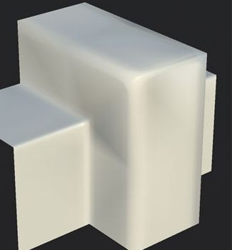

Black shading artifacts appear on multiple areas of the mesh when under lighting.

A black shaded cross usually means the normal map doesn't match the mesh, usually because the mesh geometry changed or has been computed in a way that is different from the computation performed by the baker. For example: the triangulation of the mesh is different between the baker and the viewport that renders the mesh and its normal map.
Make sure the application showing the mesh and its normal map are synced with the way the texture has been baked. This implies: